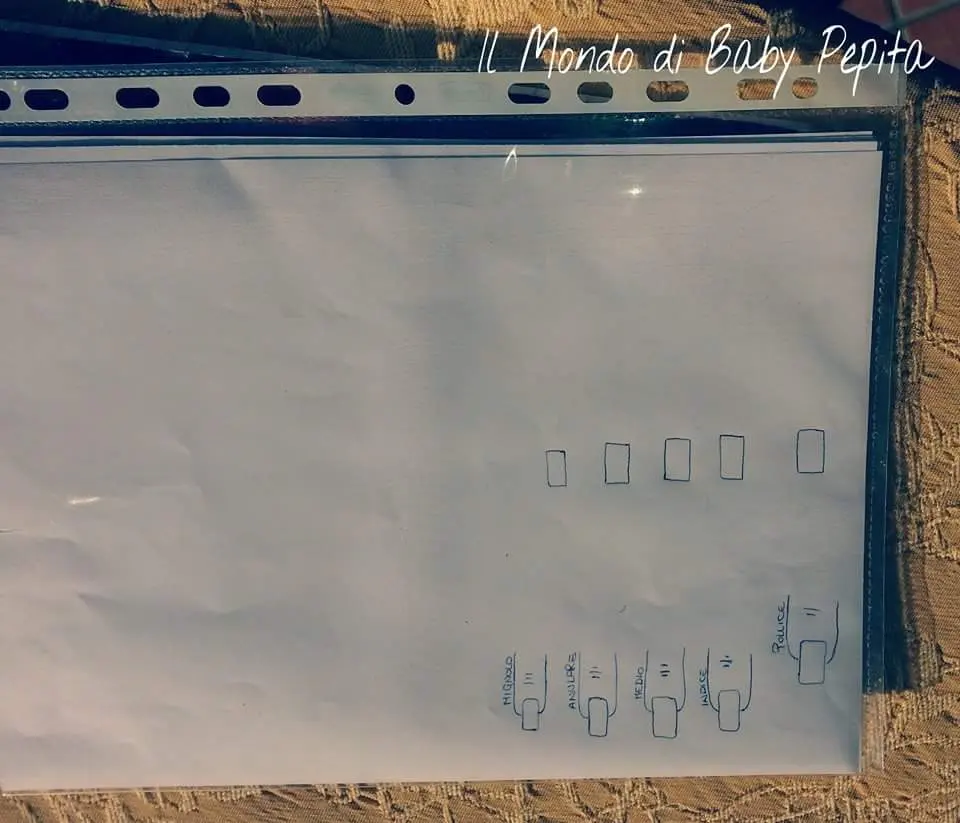
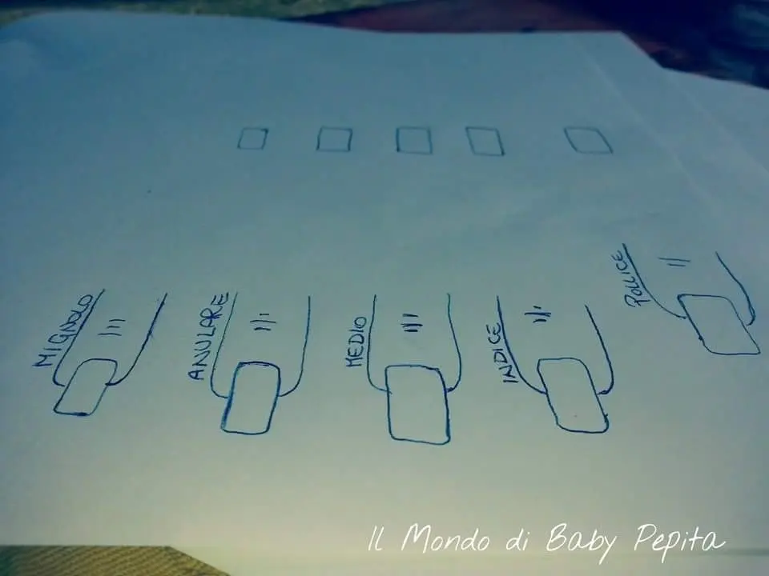
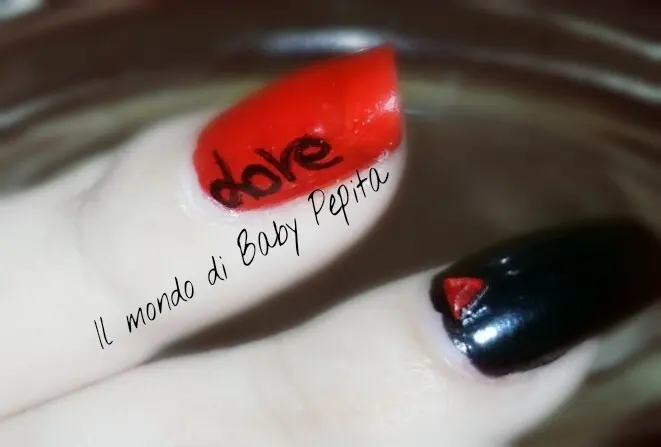
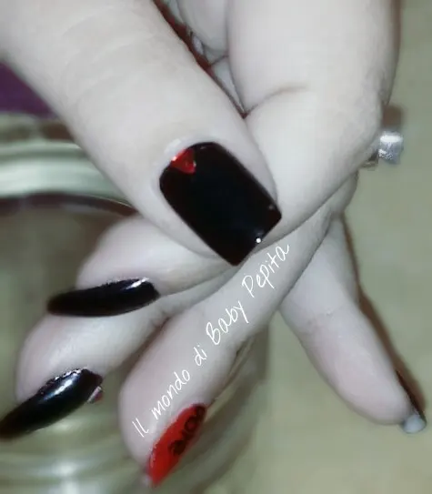
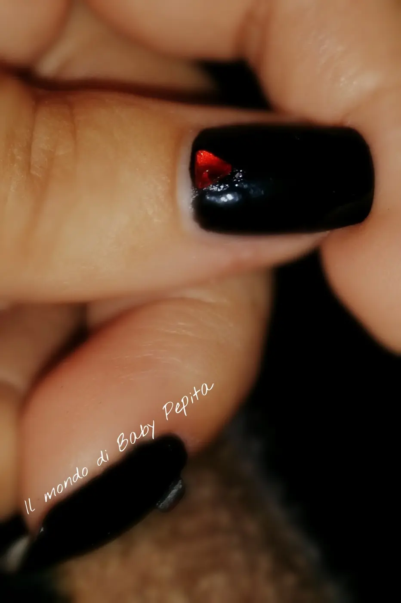
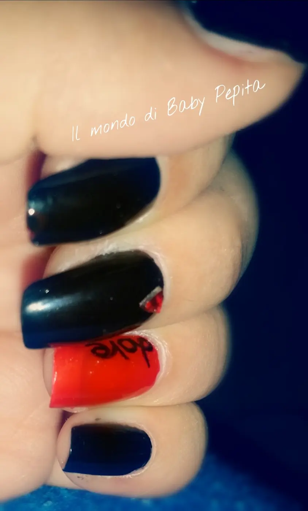
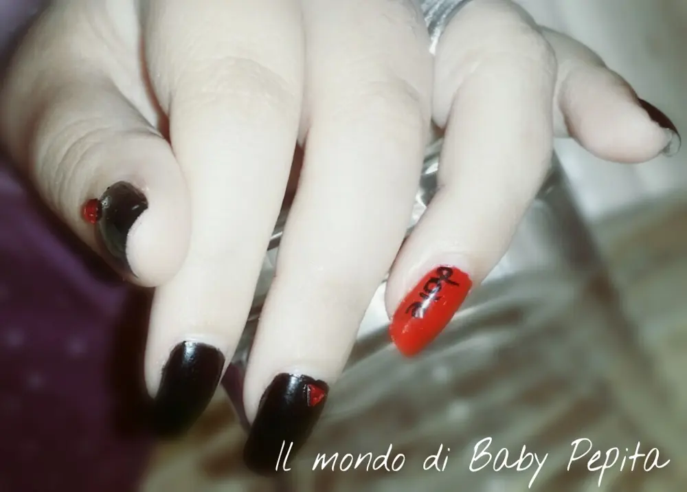

Un pò in anticipo una proposta di San Valentino 2016 + tecnica delle nail art con foglio di plastica
So che mi sono un pò in anticipo ma nel dubbio dei tanti impegni e non posso far nulla allora ne ho approfittato. .
Poi nel caso vi farò vedere qualche altra ideuccia. .
Ho usato la tecnica che stanno usando un pò tutte come ho visto su Instagram, che paio di mesi fa vi accennai sulla mia pagina Facebook. .

In pratica disegnate la forma delle vostre unghia su un foglio a4 e lo infilate in queste bustine da raccoglitore di plastica. .

Ora ogni volta potrete usare questa tecnica sia per la mano destra che per la mano sinistra. .
Come?
Stendete uno strato di smalto trasparente e fatelo asciugare e fate tutte le decorazioni con lo smalto che volete, rifate asciugare ed ora è una pellicola adesiva da mettere sull'unghia. .
Io così ho fatto per scrivere sull'anulare di questa nail art. .

Ho usato:
● smalto nero kiko 275
● smalto rosso
● brillantini rossi
● top coat

Sul pollice e sul medio ho messo un brillantino rosso (sembra un pò grande meme rendo conto ma queste avevo a disposizione ahahah

L'effetto rosso e nero mi piace tantissimo perché rende in pieno il contrasto tra passione e amore. .

Anche se semplice questa nail art mi pisce molto forse per il significato all'amore - passione che ho dato e mi ha ispirato. .

Spero che anche a voi sia piaciuta la nail art quanto me e che sia stato un pò utile quest' articolo soprattutto pEr la tecnica cHe ho adoperato. . Fatemi sapere se la userete
Un bacione